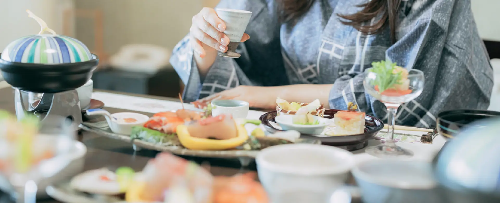
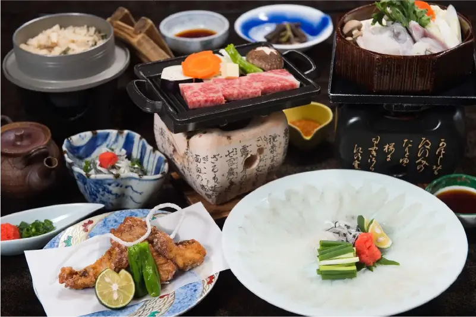
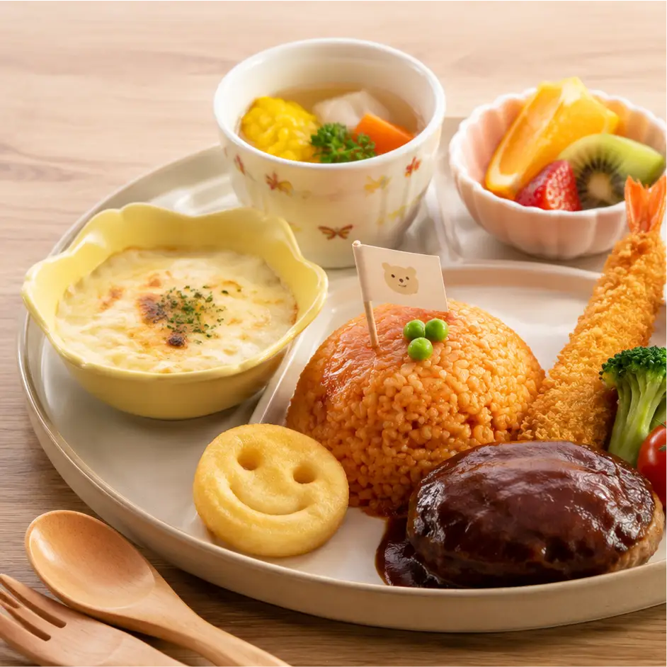
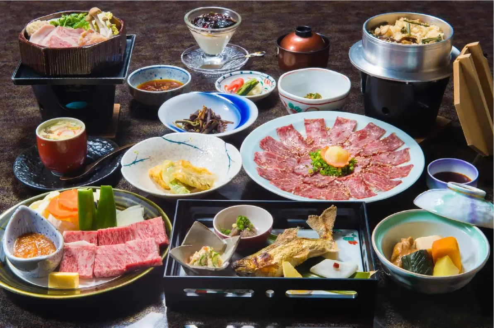
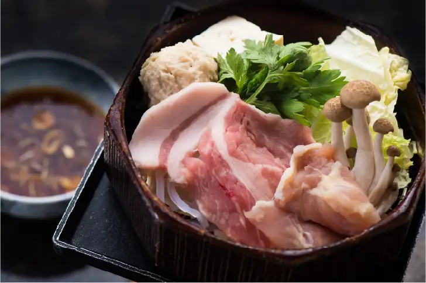
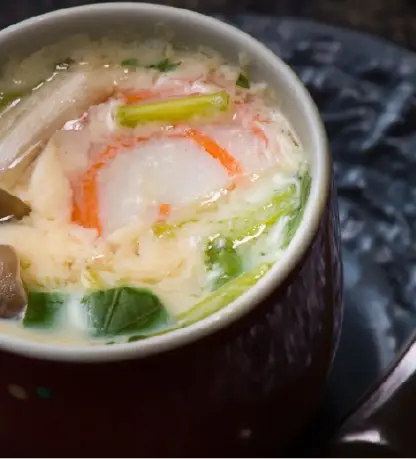
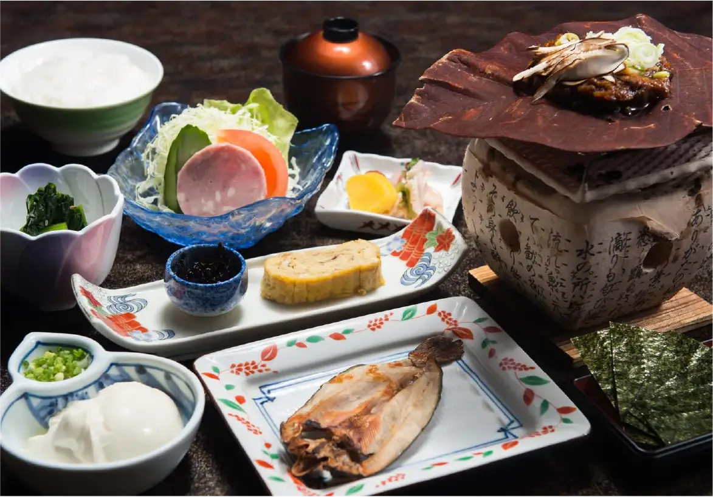

五感で味わう山方の味覚。
地元産の旬の食材をふんだんに使用した、どこか懐かしい素朴な味わい。
季節に合わせた調理法にもこだわった山方の味覚をぜひご堪能ください。

心とからだを満たす
至福の味わい。
地元山方県の自然が育んだ多彩な食材は、身体にすっと馴染むやさしい味わい。
一皿一皿から季節の移ろいや土地の息吹が伝わるような、ここでしか味わえない食の時間をご提供いたします。
お子様にも旅行の特別感を味わって笑顔になって欲しい。
そんな想いを込めて、料理長が工夫を凝らしたお子様御膳をご用意しております。

旬の会席料理kaiseki cuisine



地産地消にこだわった四季折々の旬の食材で彩る料理の品々。
当館料理長自慢の会席料理でおもてなしいたします。
朝食breakfast

とれたて地産の食材をふんだんに使用した、海・川・山の旬の味わいをご堪能いただけます。
美味しさはもちろん、身体にも優しく心満たされる朝食をお楽しみください。
- 夕食
- 18:00、18:30、19:00の三部制
- 朝食
- 7:00〜11:30（最終入場11:00）